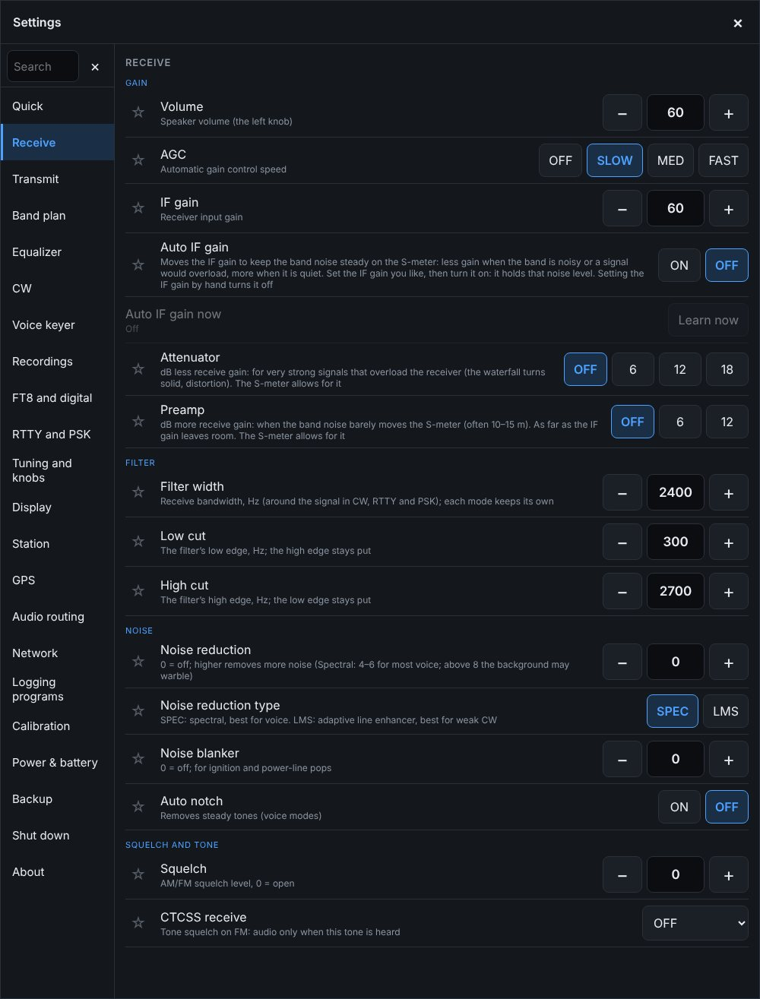

Receive#
More → Receive holds the receiver's gain, filter, noise and squelch settings. Most of them are also tiles on the control strip.

Gain#
- Volume is the speaker; the left knob and the header's volume button set the same value.
- IF gain is the receiver's input gain (the codec ahead of the ADC). Set it so the band noise moves the S-meter a little; too much and strong signals overload, too little and weak ones fall into the ADC's own noise. The S-meter allows for the IF gain, so it reads the same at any setting.
- Attenuator (6, 12, 18 dB) helps when a very strong signal overloads the receiver: the waterfall goes solid and audio distorts. The sBitx has no RF attenuator, so this lowers the gain ahead of the ADC.
- Preamp (6, 12 dB) adds gain when the band noise barely moves the S-meter (often 10–15 m), as far as the IF gain leaves room. Attenuator and Preamp turn each other off.
Auto IF gain#
Auto IF gain keeps the band noise (the S-meter between signals) at the level it had when you turned it on. It moves the IF gain in the codec's 1.5 dB steps every few seconds: less gain on a noisy band, more on a quiet one, and a quick drop when the input nears clipping. It allows for narrow filters and pauses while you transmit.
- Set the IF gain where you like it on a typical band.
- Turn Auto IF gain ON. It learns that noise level.
- Learn now takes the level again from the band as it is now (console
ifauto learn).
The row under it shows the noise in S-units, the target and the codec peak.
Setting the IF gain by hand turns Auto IF gain off; the IF tile shows
auto while it is on.
Filter#
The receive filter is set by its width (BW), low edge (LOWCUT) and high
edge (HIGHCUT), in audio Hz. Each group of modes keeps its own filter: SSB,
CW, AM, FM, DIGI, FT8/FT4, JTTY, RTTY, PSK and RADE.
- SSB and data modes: Filter width moves the high edge above the low cut.
- CW, RTTY and PSK: the filter is centered on the signal (the CW pitch or the RTTY/PSK center) and follows it; width widens or narrows both sides.
- AM and FM: symmetric about the carrier; High cut sets each side.
Noise#
- Noise reduction 0–10. With type SPEC (spectral, for voice) about 8 dB less noise at 2, 16 dB at 6, 23 dB at 10; 4–6 suits most voice, and above about 8 the background starts to warble. LMS (adaptive line enhancer) suits weak CW, where a spectral NR tends to chop the tone.
- Noise blanker 0–10, for impulse noise (ignition, power-line pops). High levels can distort very strong signals.
- Auto notch removes steady tones (carriers, heterodynes) in the voice modes, several at once, even under speech.
NR and the auto notch add about 22 ms of delay. Data modes and the audio for other programs (jeSDR Receive) always get the unprocessed audio.
Squelch and tone#
- Squelch for AM and FM, 0 = open.
- CTCSS receive: on FM, pass audio only while this tone is heard. Pick one of the 38 standard tones from the list.
All receive settings#
Gain
| Setting | Console name | Default | Values | What it does |
|---|---|---|---|---|
| Volume | AUDIO | 60 | 0–100 | Speaker volume (the left knob) |
| AGC | AGC | SLOW | OFF, SLOW, MED, FAST | Automatic gain control speed |
| IF gain | IF | 60 | 0–100 | Receiver input gain |
| Auto IF gain | IFAUTO | OFF | ON, OFF | Moves the IF gain to keep the band noise steady on the S-meter: less gain when the band is noisy or a signal would overload, more when it is quiet. Set the IF gain you like, then turn it on: it holds that noise level. Setting the IF gain by hand turns it off |
| Attenuator | ATT | OFF | OFF, 6, 12, 18 | dB less receive gain: for very strong signals that overload the receiver (the waterfall turns solid, distortion). The S-meter allows for it |
| Preamp | PRE | OFF | OFF, 6, 12 | dB more receive gain: when the band noise barely moves the S-meter (often 10–15 m). As far as the IF gain leaves room. The S-meter allows for it |
Filter
| Setting | Console name | Default | Values | What it does |
|---|---|---|---|---|
| Filter width | BW | per mode | 50–5000 | Receive bandwidth, Hz (around the signal in CW, RTTY and PSK); each mode keeps its own |
| Low cut | LOWCUT | per mode | 0–4900 | The filter’s low edge, Hz; the high edge stays put |
| High cut | HIGHCUT | per mode | 50–5000 | The filter’s high edge, Hz; the low edge stays put |
Noise
| Setting | Console name | Default | Values | What it does |
|---|---|---|---|---|
| Noise reduction | NR | 0 | 0–10 | 0 = off; higher removes more noise (Spectral: 4–6 for most voice; above 8 the background may warble) |
| Noise reduction type | NRMODE | SPEC | SPEC, LMS | SPEC: spectral, best for voice. LMS: adaptive line enhancer, best for weak CW |
| Noise blanker | NB | 0 | 0–10 | 0 = off; for ignition and power-line pops |
| Auto notch | ANF | OFF | ON, OFF | Removes steady tones (voice modes) |
Squelch and tone
| Setting | Console name | Default | Values | What it does |
|---|---|---|---|---|
| Squelch | SQL | 0 | 0–20 | AM/FM squelch level, 0 = open |
| CTCSS receive | CTCSS_RX | OFF | OFF or one of the 38 standard tones (67.0–250.3 Hz) | Tone squelch on FM: audio only when this tone is heard |
The S-meter calibration is on the Calibration page.